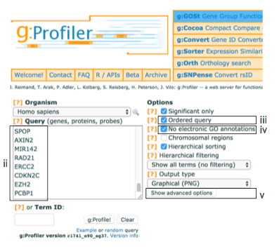
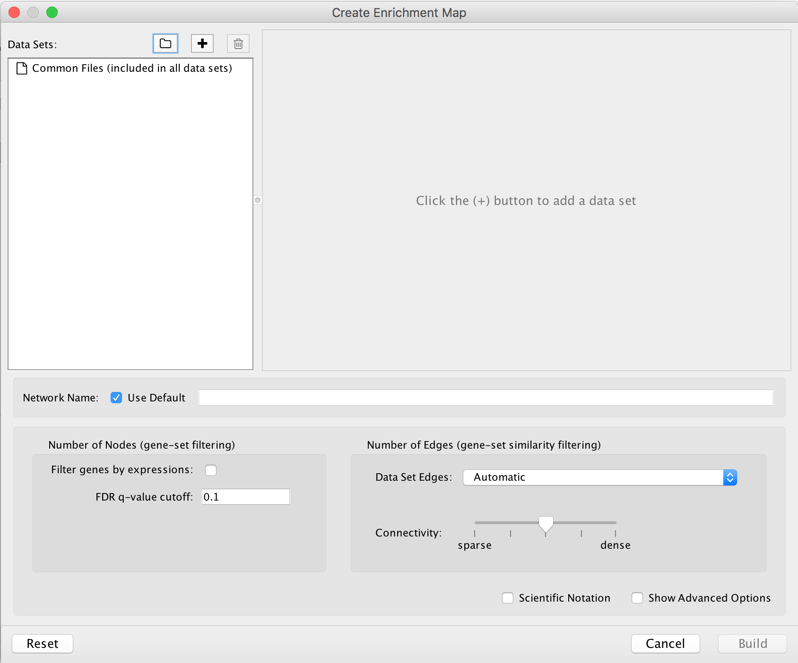

Pathway enrichment analysis and visualization of omics data using g:Profiler, GSEA and Enrichment Map in Cytoscape
This step-by-step protocol explains how to complete pathway enrichment analysis using g:Profiler (filtered gene list) and GSEA (unfiltered, whole genome, ranked gene list), followed by visualization and interpretation using EnrichmentMap.
- g:Profiler
- - is a web-based thresholded pathway enrichment tool
- Gene Set Enrichment Analysis(GSEA)
- - is a desktop application that analyzes ranked gene lists using a permutation-based test
- EnrichmentMap
- - is a Cytoscape app that visualizes the results from pathway enrichment analysis
Software Requirements
- A contemporary web browser (e.g. Chrome) for pathway enrichment analysis with g:Profiler.
- Java Standard Edition required to run GSEA and Cytoscape.
- GSEA desktop application for pathway enrichment analysis.
- Cytoscape desktop application required for enrichment map visualization. Refer to the manual for a basic introduction.
- The following Cytoscape apps:
- EnrichmentMap- version 3.1 or higher,
- clusterMaker2- version 0.9.5 or higher,
- WordCloud- version 3.1.0 or higher,
- AutoAnnotate- version 1.2.0 or higher.
- The above can be conveniently downloaded and installed together by installing the “EnrichmentMap Pipeline Collection” from the Cytoscape App Store.
Data
We provide downloadable example files referred throughout the protocol. We recommend saving all these files in a personal project data folder before starting. We also recommend creating an additional result data folder to save the files generated while performing the protocol.
- A gene list (g:Profiler)
- A list of genes with frequent somatic single nucleotide variants (SNVs) identified in The Cancer Genome Atlas (TCGA) exome sequencing data of 3,200 tumors of 12 types.The MuSiC cancer driver mutation detection software was used to find 127 cancer driver genes that displayed higher than expected mutation frequencies in cancer samples. Genes are ranked in decreasing order of significance (FDR q-value) and mutation frequency
- Supplementary_Table1_Cancer_drivers.txt
Data - continued
- A ranked gene list of interest(GSEA)
- A list of differentially expressed genes in two subtypes of ovarian cancer defined by TCGA.
- An RNK file is a two-column text file with gene IDs in the first column and gene scores in the second column. All (or most) genes in the genome need to have a score and the gene IDs need to match those used in the GMT file.
- Supplementary_Table2_MesenvsImmuno_RNASeq_ranks.rnk
- Pathway gene set database(Baderlab genesets)
- Contains a database of pathway gene sets used for pathway enrichment analysis in the standard GMT format, downloaded from http://baderlab.org/GeneSets. This file contains pathways downloaded on July 1, 2017 from eight data sources: Gene Ontology, Reactome, Panther, NetPath, NCI, MSigDB curated gene sets (C2 collection, excluding Reactome and KEGG), MSigDB Hallmark (H collection) and HumanCyc.
- A GMT file is a text file where every line represents a gene set for a single pathway. Each line includes a pathway ID, name and the list of associated genes in a tab-separated format.
- Supplementary_Table3_Human_GOBP_AllPathways_no_GO_iea_July_01_2017_symbol.gmt
Setup
Dowanload and install the required software. Download the required input and output files from the supplementary materials of the protocol.
- Download the required input and output files from the supplementary materials of the protocol.
- Create two directories, project data folder and results data folder.
- Place all downloaded input and example output files into the project data folder.
- As you progress through the protocol place any newly generated files into the results data folder.
- Install Java Version 8 or higher if not already installed.
- Download the latest version of GSEA. We recommend the javaGSEA desktop application.(Free registratio is required)
- Download the latest version of Cytoscape. Cytoscape version 3.6.0 or higher is required.
Cytoscape Setup
- Launch Cytoscape. Refer to the manual for a basic introduction.
- Go to Apps --> App manager (i.e., open the Apps menu and select the item “App manager”).
- In the Install Apps tab search bar, search for “EnrichmentMap”.
- Click on
EnrichmentMap Pipeline Collection in the centre panel. Verify that it is version 1.0.0 or higher.- Click on the Install button.
- Go to the Currently Installed tab and verify that the apps (EnrichmentMap, clusterMaker2, WordCloud and AutoAnnotate) have been installed.
Determine best Pathway Analysis Method
Two major types of gene lists are used in pathway enrichment analysis of omics data. Select A or B, depending on the type of gene list you have.
A. Flat (unranked) gene lists
- g:Profiler
- a statistical threshold is required.
- Partial, filtered ranked gene lists can also be analyzed with g:Profiler.
- Alternate tools: David, ToppGene, Enrichr,GREAT
B. Ranked, whole genome gene lists
- GSEA
- does not require prior filtering using statistical thresholds.
- Alternate tools:Camera, Roast, GOseq
6A. Pathway enrichment analysis of a gene list using g:Profiler
- Open g:Profiler
- Launch Browser
- Open the g:Profiler website at http://biit.cs.ut.ee/gprofiler/
6A. g:Profiler -Input data and set parameters
- Paste the gene list (gprofiler_genelist_Cancer_drivers.txt) into the Query field in top-left corner of the screen.
- Check the box next to Ordered query.
- Check the box next to No electronic GO annotations.
- Click on Show Advanced Options
6A. g:Profiler -Input data and set parameters - cont'd

- Set filters on gene annotation data using the legend on the right. We recommend that initial pathway enrichment analyses only includes biological processes (BP) of GO and molecular pathways of Reactome. Keep the two checkboxes checked and uncheck all other boxes in the legend.
6A. g:Profiler -Input data and set parameters - cont'd
- Set the dropdown values of Size of functional category to
5 (‘min’) and350 (‘max’) . Large pathways are of limited interpretative value, while numerous small pathways decrease the statistical power because of excessive multiple testing. - Set the dropdown Size of query/term intersection to
3 . The analysis will only consider more reliable pathways that have three or more genes in the input gene list. - Click g:Profile! to run the analysis.
- A graphical heat map image will be shown with detected pathways shown along the y axis (left) and associated genes of the input list shown along the x axis (top). Resulting pathways are organized hierarchically into related groups.
- g:Profiler returns only statistically significant pathways with p-values adjusted for multiple testing correction (called q-values).
- By default, results with q-values below 0.05 are reported.
6A. g:Profiler -Input data and set parameters - cont'd

- Use the dropdown menu Output type and select the option
Generic Enrichment Map (TAB) . This file is required for visualizing pathway results with Cytoscape and EnrichmentMap. - Click g:Profile! again to run the analysis with the updated parameters.
- The required link Download data in Generic Enrichment Map (GEM) format will appear under the g:Profiler interface.
6A. g:Profiler -Input data and set parameters - cont'd

- cont'd - Download enrichment file.
- Download the file from the link and save it on your computer in your result data folder created in Step 1i. Example results are provided in Supplementary_Table4_gprofiler_results.txt.
- Download the required GMT file by clicking on the link name at the bottom of the Advanced Options form. The GMT file is a compressed ZIP archive that contains all gene sets used by g:Profiler (e.g., gprofiler_hsapiens.NAME.gmt.zip).
- The gene set files are divided by data source.
- Download and uncompress the ZIP archive to your project folder.
- All required gene sets for this analysis will be in the file hsapiens.pathways.Name.gmt (Supplementary_Table5_hsapiens.pathways.NAME.gmt).
- Place the saved file in your result data folder created in Step 1i.
6B. Pathway enrichment analysis of a ranked gene list using GSEA
- Launch GSEA by opening the downloaded GSEA file (gsea.jnlp)
6B. Pathway enrichment analysis of a ranked gene list using GSEA - cont'd

- Click on Load Data in the top left corner in the Steps in GSEA Analysis section.
- In the Load Data tab, click on Browse for files …
- Find your project data folder and select the file ranked genelist file.
- Also select the pathway gene set definition (GMT) file using a multiple select method such as shift-click (genesets gmt file).
- Click the Choose button to continue.
- A message box indicates that the files were loaded successfully. Click the OK button to continue.
- Click on Run GSEAPreranked in the side bar under Tools.
6B. Pathway enrichment analysis of a ranked gene list using GSEA - cont'd

- Gene sets database –
- click on the button (…) located to the right and wait a few seconds for the gene set selection window to appear.
- Go to the Gene matrix (local gmx/gmt) tab using the top right arrow.
- Click on the downloaded local GMT file Supplementary_Table3_Human_GOBP_AllPathways_no_GO_iea_July_01_2017_symbol.gmt(click for info on data files) and click on OK at the bottom of the window.
-
- Number of permutations – number of times that the gene sets will be randomized to create the null distribution to calculate the p-value and FDR q-value. Use the default value of 1000 permutations.
- Ranked List – select the ranked gene list by clicking on the right-most arrows and highlighting the rank file(Supplementary_Table2_MesenvsImmuno_RNASeq_ranks.rnk)(click for info on data files).
- Click the Show button next to Basic fields to display extra options.
6B. Pathway enrichment analysis of a ranked gene list using GSEA - cont'd

- Analysis name – change default “my_analysis” to a specific name, for example “Mesen_vs_Immuno”.
- Max size: exclude larger sets – By default GSEA sets the upper limit to 500. Set this to 200 to remove the larger sets from the analysis.
- Save results in this folder – navigate to the folder where GSEA should save the results. We recommend you choose the result data folder created in Step 1i. Otherwise, GSEA will use the default location gsea_home/output/[date] in your home directory.
6B. Pathway enrichment analysis of a ranked gene list using GSEA - cont'd
- Run GSEA – click on the Run button located at the bottom of the window.
- The GSEA reports pane at the bottom left of the window will show the status “Running”.
- It will be updated to “Success” upon completion.
- This is expected to be a long running process, depending on the speed of your computer.
6B. Pathway enrichment analysis of a ranked gene list using GSEA - cont'd
- Once the GSEA analysis is complete, a green notification “Success” will appear in the bottom left section of the screen.
- All GSEA output files will be automatically saved and available in the folder you specified in the GseaPreranked interface (Specified in Step 6Bxii).
- Click on “Success” to open the results in your web browser.
- Pathways enriched in top-ranking genes (i.e. up-regulated) are shown in the first set (‘na_pos’; ‘mesenchymal’ in this protocol)
- Pathways enriched in bottom-ranked genes (i.e. down-regulated) in the second set (‘na_neg’; ‘immunoreactive’)
- In the web browser results summary, click on the “Snapshot” link under the results to get an overview of the top 20 findings.
- The most significant pathways for the first phenotype (‘na_pos’) should clearly display enrichment in top-ranking (i.e. up-regulated) genes (left side of the plot.
- the most significant pathways for the second phenotype (‘na_neg’) should clearly display enrichment in bottom-ranked (i.e. down-regulated) genes (right side of the plot)
6B. Pathway enrichment analysis of a ranked gene list using GSEA - cont'd
- In the web browser results summary, click on ‘Detailed enrichment results in HTML format’.
- Use the row numbering to check the number of pathways that have FDR q-values below 0.05 to determine appropriate thresholds for EnrichmentMap in the next step of the protocol.
- If no pathways are reported at q< 0.05, more lenient thresholds such as q<0.1 or q<0.25 could be used
- The threshold q<0.25 provides very lenient filtering and it is not uncommon to find thousands of enriched pathways at this level. Robust analyses should use a cutoff of q< 0.05 or lower.
- Filtering only by uncorrected p-values is not recommended.

Visualize enrichment results with EnrichmentMap
-
- Launch the Cytoscape software. Introductory Cytoscape tutorials can be found at http://tutorials.cytoscape.org.
-
- In the menu, click Apps --> EnrichmentMap.
-
- Create Enrichment Map panel will appear. Creating enrichment maps with g:Profiler (follow steps in 9A) and GSEA (follow steps in 9B) requires different input files.
9A. Visualize enrichment results with EnrichmentMap use g:Profiler results

-
- In the Create Enrichment Map panel, click on folder icon.
-
- Locate and select your result data folder containing the g:Profiler results and click on Open.
-
- In the right-hand pane g:Profiler output files will be automatically populated into their specified fields. Alternatively, users can click on the + symbol to specify each of the required files manually.
9A. Visualize enrichment results with EnrichmentMap use g:Profiler results - cont'd

-
- In the right-hand pane, modify Name of the created data set if desired. By default, EnrichmentMap will use the name of the g:Profiler enrichment results file (e.g. Supplementary_Table4_gprofiler_results.txt).
-
- Verify the Analysis Type is set to “Generic/gProfiler”.
-
- Verify the Enrichments results file is the g:Profiler file downloaded in Step 6Axi (or alternatively, manually specify Supplementary_Table4_gprofiler_results.txt).
-
- Verify the GMT specified is the file retrieved from the g:Profiler website in Step 6Axii . Use the file hsapiens.pathways.NAME.gmt (or alternately manually specify Supplementary_Table5_hsapiens.pathways.NAME.gmt) that contains gene sets corresponding to GO biological processes and Reactome pathways.
9A. Visualize enrichment results with EnrichmentMap use g:Profiler results - cont'd
-
- Expressions - (Optional) Upload an expression matrix for the genes analyzed in g:Profiler or alternatively an expression data set of all genes. If the expression data set contains additional genes not used for the g:Profiler search, their expression values will still appear in the heat map of the enrichment map (for example file see Supplementary_Table6_TCGA_OV_RNAseq_expression.txt).
-
- Ranks – (Optional) Ranks for the gene list or the expression data can be specified (for example, see Supplementary_Table2_MesenvsImmuno_RNASeq_ranks.rnk).
-
- Classes – (Optional) GSEA CLS file defining the phenotype (i.e. biological conditions) of each sample in the expression file, for example, see Supplementary_Table7_TCGA_OV_RNAseq_classes.cls. ).
-
- Phenotypes – (Optional) If there are two different phenotypes in the expression data, update the phenotype labels so that ‘positive’ represents the phenotype associated with positive values (Mesenchymal in this example) and ‘negative’ with negative values (Immunoreactive in this example).
9A. Visualize enrichment results with EnrichmentMap use g:Profiler results - cont'd

- Number of Nodes: -
- g:Profiler returns only statistically significant results (q < 0.05) by default, so the FDR q-value cutoff parameter can be set to 1 in the EnrichmentMap Input panel unless a more stringent filtering is desired. For this protocol, set FDR q-value to 0.01.
- Select Filter genes by expressions to exclude any genes in the gene set definition file (i.e. the gmt file) that are not found in the supplied expression file.
- If Filter genes by expressions is not selected, any gene that is not found in the expression file will be retained and will be presented in the expression heat map viewer with all of its associated expression values grayed out.
9A. Visualize enrichment results with EnrichmentMap use g:Profiler results - cont'd

- Number of Edges: -
- Keep the connectivity slider in the centre.
- If the network is too cluttered because of too many connections (edges), move the slider to the left to make the network sparser.
- Alternatively, if the network is too sparse (i.e. there are too many disconnected pathways), move the slider to the right to obtain a more densely connected network.
9A. Visualize enrichment results with EnrichmentMap use g:Profiler results - cont'd
- Click the Build button at the bottom of the EnrichmentMap Input panel. A Building EnrichmentMap box appears and indicates the progress status. This box will disappear once the map has been created successfully.
9B. Visualize enrichment results with EnrichmentMap use GSEA results

-
- In the Create Enrichment Map panel, click on folder icon.
-
- Locate and select your result data folder containing the GSEA results and click on Open.
-
- In the right-hand pane, GSEA output files will be auto populated into their specified fields. Alternately the + symbol can be clicked to specify each of the required files manually.
Template Tutorial
List, Image and Citation
Here, a brief bullet point list is used to introduce some features of the app, and a citation is provided.

- Search hundreds of pathways directly from Cytoscape
- Import pathways as pathway or network
- Visualize data or use for network analysis
Kutmon (2014) WikiPathways App for Cytoscape: Making biological pathways amenable to network analysis and visualization. F1000Res, 2014 Jul 1
Template Tutorial
Two-column slide layout
The two-column slide layout is convenient for placing text. This example shows two lists of URLs.
Cancer pathways
Disease pathways
Template Tutorial
Animated List Elements
Here's an example of an animated list. Click the down or right arrow to step through the list.
WikiPathways App Features
- Search hundreds of pathways directly from Cytoscape
- 25 species represented
- Import pathways as pathway or network
- Visualize data or use for network analysis
Template Tutorial
CyBrowser and CyCommands interactivity
CyBrowser allows for viewing any html page in Cytoscape. Together with CyCommands, this makes it possible to automate tutorial content with buttons and/or links. For example, if the tutorial describes how to load a network, a button to automatically load the network can be included.
With some css and javascript included in the Cytoscape tutorial style it is possible to selectively view content exclusively in CyBrowser and regular browser, respectively.